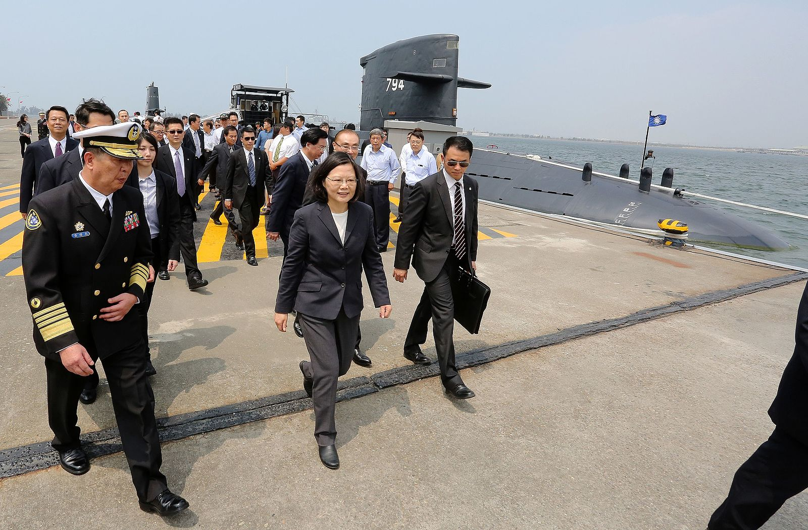

政策放大鏡》解密國艦國造
總統蔡英文執政四年大打國防牌，喊出國艦國造、國機國造等口號，選前再次被放大檢視。
相較於馬英九政府，蔡英文政府每年的軍事投資預算皆逐年成長，109年軍事投資960億，也是近十年第三高。
國艦國造為什麼這麼重要？這些錢都花去哪？

總統蔡英文執政四年大打國防牌，喊出國艦國造、國機國造等口號，選前再次被放大檢視。
相較於馬英九政府，蔡英文政府每年的軍事投資預算皆逐年成長，109年軍事投資960億，也是近十年第三高。
國艦國造為什麼這麼重要？這些錢都花去哪？
翻開近十年的《國防報告書》，可見「國防自主」一詞從個段落中的片段，變成主要章節，代表近年政府強調落實自主製造防衛性武器的國防態度。
根據國防部至立法院備詢報告，國艦國造計畫為2014年海軍司令陳永康上將任內開始規劃，而2016年司令黃曙光上將任內，則首度編列預算，並啟動原型設計、原料採購等計畫。
蔡英文說，因應國際情勢，若台灣要有效捍衛海疆，就需要透過國防產業，帶動經濟發展。2019年5月，蔡英文出席沱江艦動工典禮，喊話十年內海軍與海防要增加200艘艦艇，而這些艦艇，將全數由台灣的廠商製造。
蔡英文所提約200艘艦艇，除了已經發包的141艘100噸至4000噸巡防艦，還有首艘自製潛艦、快速佈雷艇等71艘艦艇，供未來海防使用。
根據政府電子採購網，141艘巡防艦就花了345億，而據國防部，71艦艇包含潛艦的設計、製圖及製造，共編超過1368億元預算。
| 艦艇分類 | 數量(艘) | 預算 |
|---|---|---|
| 潛艦國造 | 1 | 「合約設計」預算約29.9億餘元（2016年至2020年） 「原型艦建造」預算共493億餘元(2019年至2025年） |
| 快速佈雷艇 | 4 | 9億1776萬元 |
| 兩棲船塢運輸艦 | 1 | 73億3212萬元 |
| 沱江艦後續艦 | 3 | 164億餘元 |
| 新一代飛彈巡防艦 | 1 | 245億4916萬元預算（2019年到2026年） |
| 新型救難艦 | 1 | 約36億5800萬2千元（2019年至2023年執行） |
| 微型飛彈突擊艇 | 60 | 316億3844萬元（2019年至2023年執行） |
在沱江艦動工典禮後，蔡英文在臉書上表示，沱江艦艦體小、速度快，火力也強，若能夠搭配水下潛艦，對海軍的防衛能力是一大助力。
1000 噸級巡防艦搶在2019年底開工，海巡署艦艇分署表示，新的巡防艇耐浪性更高，並更新水砲、夜間照明的配備，除了能應付不同季節的海象，也能加強取締越界作業的效率。
國立海洋科技大學系統工程暨造船學系教授陳建宏說，國艦國造並非新的政策，從國民黨政府遷台，即討論自製潛艦，而後因政治環境、國際情勢變動，國艦國造始終是未定數。
陳建宏指出，艦艇分水面艦與水下艦，而水面艦技術門檻不高，台灣廠商如台灣國際造船、中信造船及龍德造船，都有辦法量產。
台船
成立初期名為「中國造船」，最初在高雄設址，現在高雄及基隆皆有大型造船廠。因應國艦國造計畫，今年也撥出其中一塊，作為「潛艦國造基地」，並且規劃紅區裝備設立專區。
原先台船也靠商船、國家造艦訂單，在國際市場變動下，載浮載沉，近年因為國艦國造、離岸風電幾案，訂單大增，扭轉前幾年虧損的狀況。
員工人數：3,017
實收資本額：4,729,917,000
成立日期：1973/11/7
資料來源：經濟部商業司、台船年報、經濟日報
水下艦如潛艦，關鍵技術與武器系統不易取得，加上過去政治因素影響，才因此遲遲無法有實際成果。
據內政部統計，109年蔡政府總預算2兆1022億，國防部主管預算共3580億元，其中軍事投資960億，國艦國造案佔1成5，共154億。
事實上，蔡英文上台後，國防預算連年穩定增加，在過去幾任總統期間，皆未曾出現此狀況。除了穩定增加經費，陳建宏說，目前國際情勢變動對台灣有利，受惠中美貿易戰，台灣得以取得紅區裝備，也是順利進行潛艦計劃的重要里程碑。


當經費、裝備陸續到位，陳建宏說，仍需要面對最大難題——系統整合。陳建宏解釋，過去造艦常碰到第一個問題是技術門檻高，再來是裝備取得不易，而最後如何將設備裝上艦艇，發揮功能，則是最大難關。
「就算是改動一個電鍋配置，需要重畫的圖就幾千張。」陳建宏說，在過去經手的案子裡，曾經有次希望更動電鍋的設置，然而艦艇設計繁複而精密，每個線路都彼此牽連，小改動也是大動作。


陳建宏分析，過去因為造船業景氣穩不穩，許多學生在造船相關科系畢業後，往往向其他更有前景的行業靠攏。他不諱言，在此趨勢中，國艦國造案在人才端的確可能出現缺口。
但陳建宏態度樂觀，他認為，若國艦國造案能維持穩定的造艦計畫，加上離岸風電需要的功能船，有助於國內相關產業的發展，國艦國造所需人才，不久後將逐一到位。
國艦國造案在2020年仍有百億預算等著執行，而這些一步一步擘劃的設計藍圖，是否能夠如期落實，化成艦艇躍上海面，不僅是台灣船業關注的焦點，也無疑是下一任政府無法逃避的考驗。
總統辯論會》「我是最重視國防的總統」 蔡英文：國艦國造是現在進行式
MIT海巡艦來了！自己的國家自己顧，台灣造船業如何重返榮耀？
陳其邁：台船國艦國造 未來20年投入5,000億